The Evolution of USGS Benchmarks
United State Lighthouse Boundary Stones
USGS NOGLS Datum
Benchmark Finding Game
Benchmark Map
Here is a list of benchmarks that I have personally recovered that are still there.
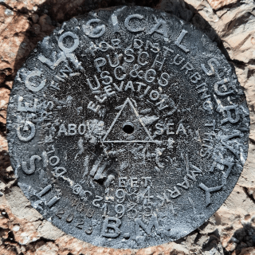
PUSCH - CZ1865
"PUSCH" is a benchmark monumented by the USGS in 1903 located in Pima County, Arizona. It has 2 reference marks, 1 of which has been destroyed, and a non-dedicated azimuth, which has been destroyed.
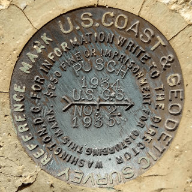
PUSCH NO: 2 - CC8062
"PUSCH NO: 2" is a benchmark monumented by the USC&GS in 1935 located in Pima County, Arizona. It is a dedicated reference mark for PUSCH.
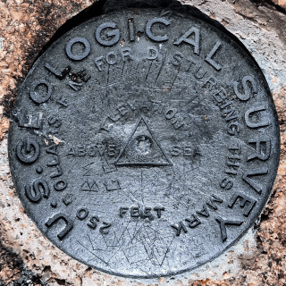
GRANITE - ET0988
"GRANITE" is a benchmark monumented by the USGS in 1903 located in Yavapai County, Arizona. It is a non-dedicated reference mark for GRANITE.
Old Datasheet (on pdf page 159, document page 158)
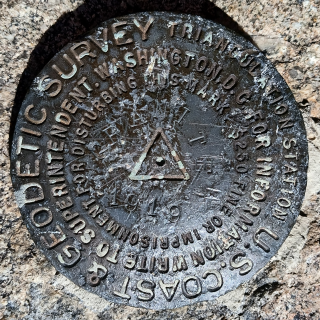
GRANITE - ET0987
"GRANITE" is a benchmark monumented by the USC&GS in 1919 located in Yavapai County, Arizona. It has 2 reference marks, 1 of which is non-dedicated, and a dedicated azimuth.
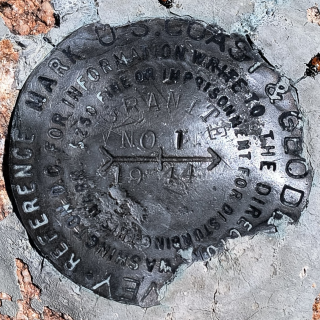
GRANITE NO 1 - CH2368
"GRANITE NO 1" is a benchmark monumented by the USC&GS in 1944 located in Yavapai County, Arizona. It is a dedicated reference mark for GRANITE.
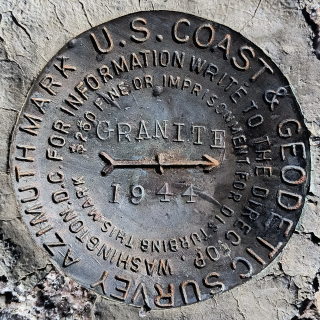
GRANITE 1944 - CH2367
"GRANITE 1944" is a benchmark monumented by the USC&GS in 1944 located in Yavapai County, Arizona. It is the dedicated azimuth marks for GRANITE.
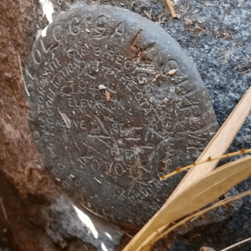
SOTOL - CZ1887
"SOTOL" is a benchmark monumented by the USGS in 1946 located in Pinal County, Arizona. It has 2 reference marks, one being dedicated and the other not being dedicated.
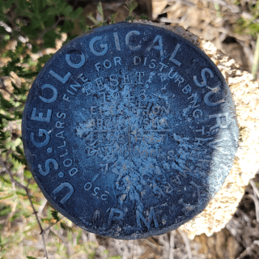
NOGLS 4503 RESET - CC8280
"NOGLS 4503 RESET" is a benchmark monumented by the USGS in 1946 located in Pinal County, Arizona. It is a non dedicated reference mark for SOTOL.
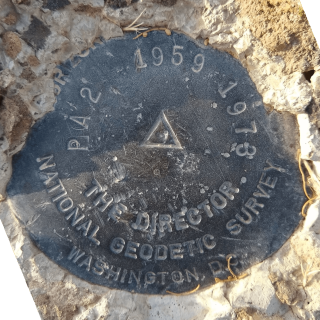
PA 2 - CZ1835
"PA 2" is a benchmark originally monumented by the USC&GS in 1959 and reset in 1973 by the NGS located in Pima County, Arizona. It has 3 reference marks and a non-dedicated azimuth.
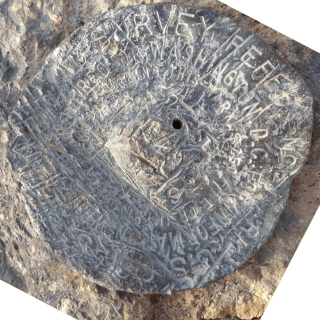
PA 2 NO 1 - CC7928
"PA 2 NO 1" is a benchmark monumented by the USC&GS in 1959 located in Pima County, Arizona. It is a dedicated reference mark for PA 2.
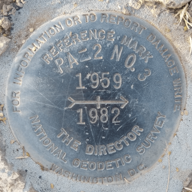
PA 2 NO 3 - CR8310
"PA 2 NO. 3" is a benchmark monumented by the USC&GS in 1982 located in Pima County, Arizona. It is a dedicated reference mark for PA 2.
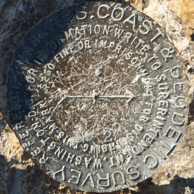
WASSON NO 2 - CH5703
"WASSON NO 2" is a benchmark monumented by the USC&GS in 1919 located in Pima County, Arizona. It is a dedicated reference mark for WASSON, which has been destroyed.
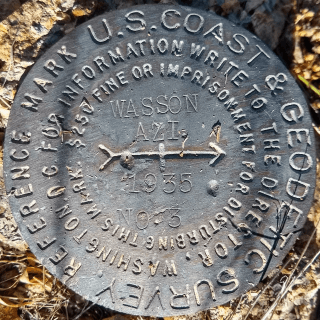
WASSON AZI NO. 3 - CH5701
"WASSON AZI NO. 3" is a benchmark monumented by the USC&GS in 1935 located in Pima County, Arizona. It is a dedicated azimuth mark for WASSON, which has been destroyed.
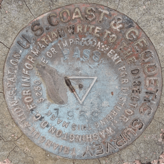
PASS - CG1046
"PASS" is a benchmark monumented by the USC&GS in 1938 located in Santa Cruz County, Arizona. It has 2 reference marks and a non-dedicated azimuth.
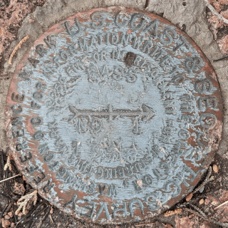
PASS NO 1 - CC7955
"PASS NO 1" is a benchmark monumented by the USC&GS in 1938 located in Santa Cruz County, Arizona. It is a dedicated reference mark for PASS.
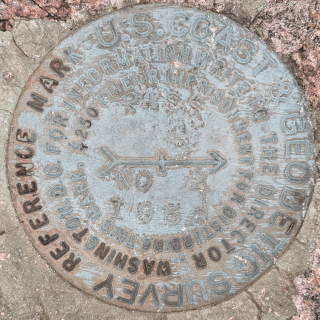
PASS NO 2 - CC7956
"PASS NO 2" is a benchmark monumented by the USC&GS in 1938 located in Santa Cruz County, Arizona. It is a dedicated reference mark for PASS.
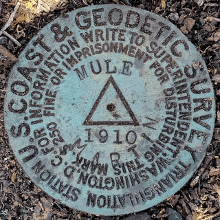
MULE - CF0355
"MULE" is a benchmark monumented by the USC&GS in 1910 in Cochise County, Arizona. It has 4 reference marks (2 disks, 2 markings in rock) and two dedicated azimuths.
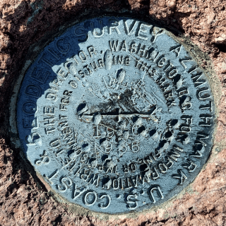
MULE 1936
"MULE 1936" is a benchmark monumented by the USC&GS in 1936 located in Cochise County, Arizona. It is the first of the two dedicated azimuth marks for MULE.
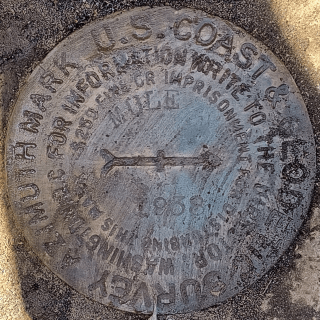 MULE - CC6978
"MULE 1938" is a benchmark monumented by the USC&GS in 1938 located in Cochise County, Arizona. It is the second of the two dedicated azimuth marks for MULE.
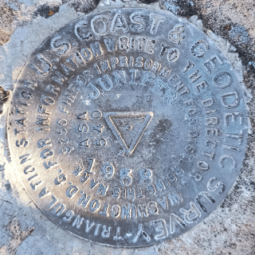
JUNIPER - CF0356
"JUNIPER" is a benchmark monumented by the USC&GS in 1938 in Cochise County, Arizona. It has 2 dedicated reference marks and a dedicated azimuth.
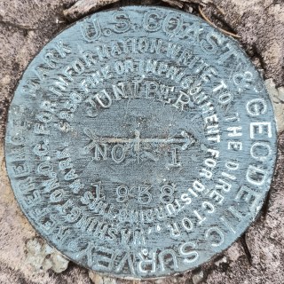
JUNIPER NO 1 - CC6774
"JUNIPER NO 1" is a benchmark monumented by the USC&GS in 1938 located in Santa Cruz County, Arizona. It is a dedicated reference mark for JUNIPER.

JUNIPER NO 2 - CC6775
"JUNIPER NO 2" is a benchmark monumented by the USC&GS in 1938 located in Santa Cruz County, Arizona. It is a dedicated reference mark for JUNIPER.
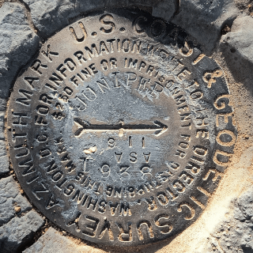 JUNIPER - CC6773
"JUNIPER" is a benchmark monumented by the USC&GS in 1938 located in Cochise County, Arizona. It is the dedicated azimuth mark for JUNIPER.
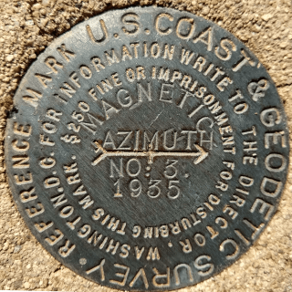
MAGNETIC AZIMTUH NO: 3 - CZ2410
"MAGNETIC AZIMUTH NO: 3" is a benchmark monumented by the USC&GS in 1935 located in Pima County, Arizona. It is a dedicated azimuth mark for MAGNETIC, which has been destroyed.

TUCSON CAMERA - CZ1829
"TUCSON CAMERA" is a benchmark monumented by the USAFGS in 1964 located in Pima County, Arizona.
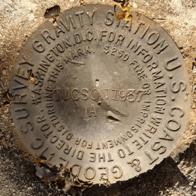
TUCSON A - DE5827
"TUCSON A" is a benchmark monumented by the USC&GS in 1937 located in Pima County, Arizona. It is right next to "TUCSON B".
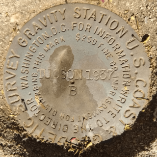
TUCSON B - DE5834
"TUCSON B" is a benchmark monumented by the USC&GS in 1937 located in Pima County, Arizona. It is right next to "TUCSON A".

TUCSON - CZ0276
"TUCSON" is a benchmark monumented by the USC&GS in 1933 located in Pima County, Arizona.
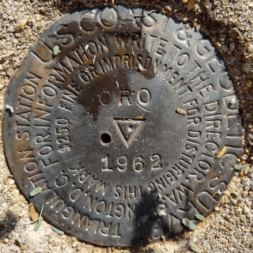
ORO - CZ0118
"ORO" is a benchmark monumented by the USC&GS in 1962 located in Pima County, Arizona. It has 2 dedicated reference marks and a non dedicated azimuth, which has been destroyed.
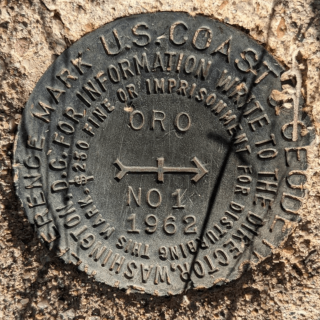
ORO NO 1 - CZ0119
"ORO NO 1" is a benchmark monumented by the USC&GS in 1962 located in Pima County, Arizona. It is a dedicated reference mark for ORO.
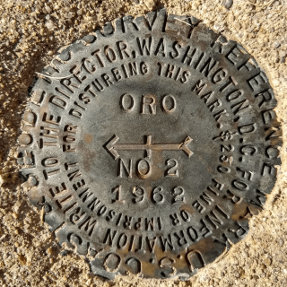
ORO NO 2 - CZ0120
"ORO NO 2" is a benchmark monumented by the USC&GS in 1962 located in Pima County, Arizona. It is a dedicated reference mark for ORO.
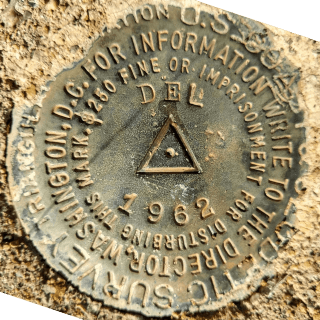
DEL - CZ1693
"DEL" is a benchmark monumented by the USC&GS in 1962 located in Pima County, Arizona. It has 2 dedicated reference marks and a non dedicated-azimuth, which has been destroyed.
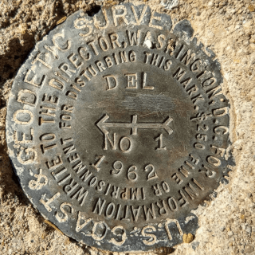
DEL NO 1 - CZ1694
"DEL NO 1" is a benchmark monumented by the USC&GS in 1962 located in Pima County, Arizona. It is a dedicated reference mark for DEL.
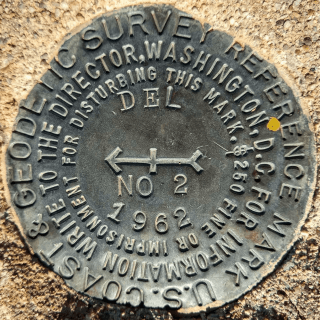
DEL NO 2 - CZ1692
"DEL NO 2" is a benchmark monumented by the USC&GS in 1962 located in Pima County, Arizona. It is a dedicated reference mark for DEL.
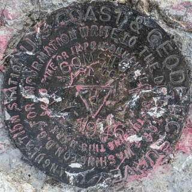
COMSTOCK - CG0960
"COMSTOCK" (CGS) is a benchmark monumented by the USC&GS in 1946 located in Cochise County, Arizona. It has 2 dedicated reference marks and two dedicated azimuth marks, one of which is inaccessable.
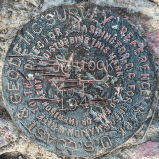
COMSTOCK NO 1 - CC7187
"COMSTOCK NO 1" is a benchmark monumented by the USC&GS in 1946 located in Cochise County, Arizona. It is a dedicated reference mark for COMSTOCK.

COMSTOCK RESET - CC7186
"COMSTOCK RESET" is a benchmark monumented by the ADOT in 1963 located in Cochise County, Arizona. It is a dedicated azimuth mark for COMSTOCK.
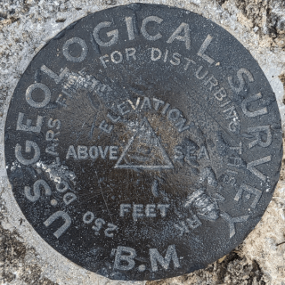
COMSTOCK
"COMSTOCK" (USGS) is a benchmark monumented by the USGS in 1903 located in Cochise County, Arizona.
Datasheet (on pdf page 167, document page 166)

SANTA - CZ1648
"SANTA" is a benchmark monumented by the USC&GS in 1962 located in Pinal County, Arizona. It has 2 dedicated reference marks.
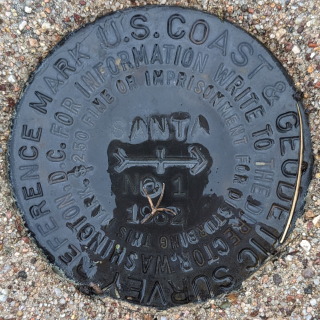
SANTA NO 1 - CZ1649
"SANTA NO 1" is a benchmark monumented by the USC&GS in 1962 located in Pinal County, Arizona. It is a dedicated reference mark for SANTA.

SANTA NO 2 - CZ1650
"SANTA NO 2" is a benchmark monumented by the USC&GS in 1962 located in Pinal County, Arizona. It is a dedicated reference mark for SANTA.

SAN - CZ1644
"SAN" is a benchmark monumented by the USC&GS in 1962 located in Pinal County, Arizona. It has 2 dedicated reference marks.
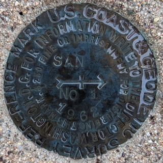
SAN NO 1 - CZ1645
"SAN NO 1" is a benchmark monumented by the USC&GS in 1962 located in Pinal County, Arizona. It is a dedicated reference mark for SAN.
"SAN NO 2" is a benchmark monumented by the USC&GS in 1962 located in Pinal County, Arizona. It is a dedicated reference mark for SAN.
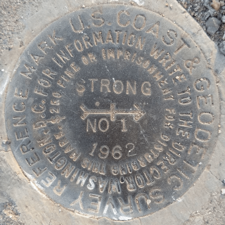
STRONG NO 1 - DV0653
STRONG NO 1" is a benchmark monumented by the USC&GS in 1962 located in Maricopa County, Arizona. It is a dedicated reference mark for STRONG.
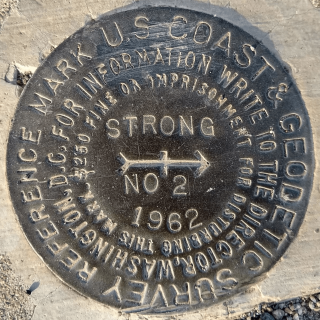
STRONG NO 2 - DV0651
STRONG NO 2" is a benchmark monumented by the USC&GS in 1962 located in Maricopa County, Arizona. It is a dedicated reference mark for STRONG.
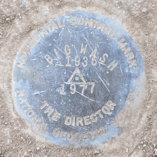
BIG WASH RESET - AA7441
"BIG WASH RESET" is a benchmark monumented by the NGS in 1977 located in Pima County, Arizona. It has 4 dedicated reference marks, 3 of which have been destroyed, and a dedicated azimuth, which has also been destroyed. Originally, the benchmark was set in 1936.
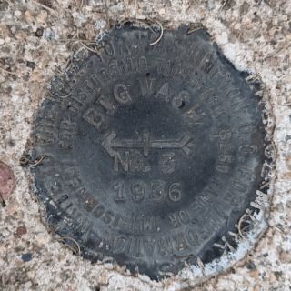
BIG WASH NO. 3 - CZ0316
"BIG WASH NO. 3" is a benchmark monumented by the USC&GS in 1936 located in Pima County, Arizona. It is a dedicated reference mark for BIG WASH RESET.
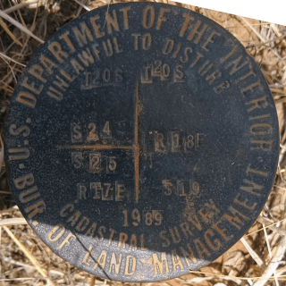
T20S R17E S24 S25 T20S R18E S19 SC
"T20S R17E S24 S25 T20S R18E S19 SC" is a benchmark monumented by the BLM in 1989 located in Santa Cruz County, Arizona.
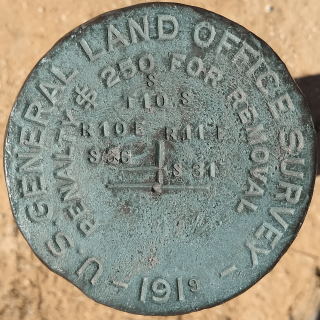
T10S R10E S36 R11E S31 SC - CZ0373
"T10S R10E S36 R11E S31 SC" is a benchmark monumented by the GLO in 1919 located in Pima County, Arizona.
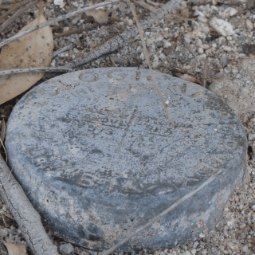
NOGLS 2573
"NOGLS 2573" is a benchmark monumented by the USGS in 1904 located in Pima County, Arizona.
Datasheet (on trunk line 4 of page 2)
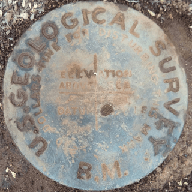
NOGLS 4534
"NOGLS 4534" is a benchmark monumented by the USGS in 1903 or 1904 located in Pima County, Arizona.
Datasheet (on pdf page 25, document page 24)
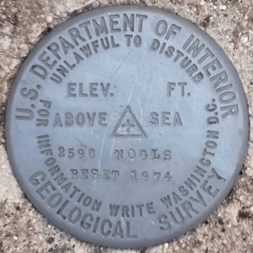
NOGLS 2596 RESET
"NOGLS 2596 RESET" is a benchmark monumented by the USGS on or within the year of September 4, 1974 located in Pima County, Arizona.
Datasheet (on pdf page 11)
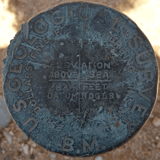
NOGLS 2835 - CZ0122
"NOGLS 2835" is a benchmark monumented by the USGS in 1904 located in Pima County, Arizona.
Datasheet (on trunk line 4 of page 2)
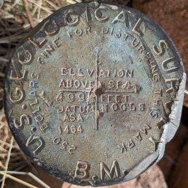
NOGLS 4997 - CG1001
"NOGLS 4997" is a benchmark monumented by the USGS in 1903 located in Santa Cruz County, Arizona. It had two reference marks and an azimuth mark. Only one reference mark is still present.
Datasheet (on pdf page 29, document page 28)

NOGLS 4653
"NOGLS 4653" is a benchmark monumented by the USGS in 1903 or 1904 located in Santa Cruz County, Arizona.
Datasheet (on pdf page 28, document page 27)

NOGLS 5442
"NOGLS 5442" is a benchmark monumented by the USGS in 1903 or 1904 located in Santa Cruz County, Arizona.
Datasheet (on pdf page 29, document page 28)
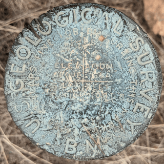
NOGLS 5496
"NOGLS 5496" is a benchmark monumented by the USGS in 1903 or 1904 located in Santa Cruz County, Arizona.
Datasheet (on pdf page 28, document page 27)
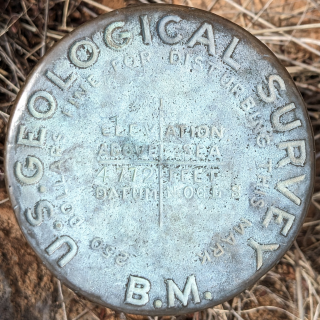
NOGLS 4772
"NOGLS 4772" is a benchmark monumented by the USGS in 1903 or 1904 located in Santa Cruz County, Arizona.
Datasheet (on pdf page 28, document page 27)
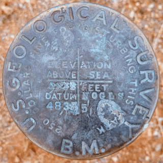
NOGLS 4835
"NOGLS 4835" is a benchmark monumented by the USGS in 1903 or 1904 located in Pima County, Arizona.
Datasheet (on pdf page 25, document page 24)
"NOGLS 3290" is a benchmark monumented by the USGS in 1903 or 1904 located in Pima County, Arizona.
Datasheet (on pdf page 5)
Old Datasheet (on pdf page 25, document page 24)
"NOGLS 3653" is a benchmark monumented by the USGS in 1903 located in Pinal County, Arizona.
Datasheet (on pdf page 19, document page 18)
"NOGLS 3531" is a benchmark monumented by the USGS in 1903 located in Pinal County, Arizona.
Datasheet (on pdf page 25, document page 24)
"NOGLS 3721" is a benchmark monumented by the USGS in 1903 or 1904 located in Pima County, Arizona.
Datasheet (on pdf page 24, document page 23)
"NOGLS 3969" is a benchmark monumented by the USGS in 1903 or 1904 located in Pima County, Arizona.
Datasheet (on pdf page 24, document page 23)
"NOGLS 3891" is a benchmark monumented by the USGS in 1903 or 1904 located in Santa Cruz County, Arizona.
Datasheet (on pdf page 26, document page 25)
"NOGLS 3140" is a benchmark monumented by the USGS in 1903 or 1904 located in Santa Cruz County, Arizona.
Datasheet (on pdf page 27, document page 26)
"NOGLS 4632" is a benchmark monumented by the USGS in 1903 or 1904 located in Pima County, Arizona.
Datasheet (on pdf page 26, document page 25)
"NOGLS 4040" is a benchmark monumented by the USGS in 1904 located in Pinal County, Arizona.
Datasheet (on pdf page 18, document page 18)
"NOGLS 4200" is a benchmark monumented by the USGS in 1903 located in Cochise County, Arizona.
Old Datasheet (on pdf page 30, document page 29)
"NOGLS 4526" is a benchmark monumented by the USGS in 1903 located in Cochise County, Arizona.
Old Datasheet (on pdf page 30, document page 29)
"NOGLS 1899" is a benchmark monumented by the USGS in 1903 located in Pima County, Arizona.
Datasheet (on pdf page 11)
Old Datasheet (on pdf page 12, document page 11)
"NOGLS 1940" is a benchmark monumented by the USGS in 1903 located in Pima County, Arizona.
Datasheet (on pdf page 11)
Old Datasheet (on pdf page 12, document page 11)
"SF 200" is a benchmark monumented by the USGS in 1908 located in Santa Barbra, California.
Old Datasheet (on pdf page 609, document page 551)
"PRSCT 5346" is a benchmark monumented by the USGS in 1903 located in Prescott, Arizona.
Old Datasheet (on pdf page 60, document page 59)
"PRSCT 5557" is a benchmark monumented by the USGS in 1903 located in Prescott, Arizona.
Datasheet (on pdf page 60, document page 59)
"LA 43" is a benchmark monumented by the USGS in 1901 located in Santa Barbra, California.
Old Datasheet (on pdf page 170, document page 154)
"8826 VA" is a benchmark monumented by the USGS in or before 1916 located in Cochise County, Arizona.
"6883" is a benchmark monumented by the USGS in 1907 located in Coconino County, Arizona.
Datasheet (on doc page 76, pdf page 77)
"206 1/2" AKA "G 279" is a benchmark monumented by the USGS in 1905 located in Pinal County, Arizona.
Old Datasheet (on pdf page 12, document page 11)

ROLLAND
"ROLLAND" is a benchmark monumented by the USACE in 1953 located in Manistee County, Michigan.

E 3 - FQ0230
"E 3" is a benchmark monumented by the USC&GS in 1909 located in Coconino County, Arizona.
"Y 18" is a benchmark monumented by the USC&GS in 1933 located in Pinal County, Arizona.
"A 77" is a benchmark monumented by the USC&GS in 1934 located in Santa Cruz County, Arizona.
"F 77" is a benchmark monumented by the USC&GS in 1934 located in Santa Cruz County, Arizona.
"H 77" is a benchmark monumented by the USC&GS in 1934 located in Santa Cruz County, Arizona.
"HIGHWAY" is a benchmark monumented by the USGS in 1946 located in Pinal County, Arizona. It has 2 dedicated reference marks.
"HIGHWAY NO 1" is a benchmark monumented by the USGS in 1946 located in Pinal County, Arizona. It is a dedicated reference mark for HIGHWAY.
"HIGHWAY NO 2" is a benchmark monumented by the USGS in 1946 located in Pinal County, Arizona. It is a dedicated reference mark for HIGHWAY.
"GRISWOLD" is a benchmark monumented by the USC&GS in 1971 located in Pima County, Arizona. It has 3 dedicated reference marks, 1 of which have been destroyed, and a non-dedicated azimuth, which has also been destroyed.
"GRISWOLD NO 2" is a benchmark monumented by the USC&GS in 1972 located in Pima County, Arizona. It is a dedicated reference mark for GRISWOLD.
"GRISWOLD RM A" is a benchmark monumented by the USC&GS in 1972 located in Pima County, Arizona. It is a dedicated reference mark for GRISWOLD.
"TAMARACK" is a benchmark monumented by the USC&GS in 1932 located in Manistee County, Michigan. It had 3 dedicated reference marks, one of which has been destroyed, and a dedicated azimuth, which has an unknown status.
"TAMARACK NO 3" is a benchmark monumented by the USC&GS in 1964 located in Leelanau County, Michigan. It is a dedicated reference mark for TAMARACK.
"SUMMERHAVEN" is a benchmark monumented by the USC&GS in 1936 located in Pima County, Arizona. It has 2 dedicated reference marks and a dedicated azimuth, which has likely destroyed.

SUMMERHAVEN NO 1 - CC8320
"SUMMERHAVEN NO 1" is a benchmark monumented by the USC&GS in 1936 located in Pima County, Arizona. It is a dedicated reference mark for SUMMERHAVEN.
"SUMMERHAVEN NO 2" is a benchmark monumented by the USC&GS in 1936 located in Pima County, Arizona. It is a dedicated reference mark for SUMMERHAVEN.
"R 87" is a benchmark monumented by the USC&GS in 1934 located in Leelanau County, Michigan.
"T 87" is a benchmark monumented by the USC&GS in 1934 located in Leelanau County, Michigan.
"U 87" is a benchmark monumented by the USC&GS in 1934 located in Leelanau County, Michigan.
"W 2" is a benchmark monumented by the USC&GS in 1924 located in Mercer County, New Jersey.
"U 340" is a benchmark monumented by the USC&GS in 1952 located in New York County, New York.

L 295 - CZ0754
"L 295" is a benchmark monumented by the USC&GS in 1951 located in Pima County, Arizona.
"L 424" is a benchmark monumented by the NGS in 1980 located in Pima County, Arizona.
"L 112" is a benchmark monumented by the USC&GS in 1935 located in Pima County, Arizona.
"M 19" is a benchmark monumented by the USC&GS in 1933 located in Pima County, Arizona.
"Z 19" is a benchmark monumented by the USC&GS in 1933 located in Pinal County, Arizona.
"Z 18" is a benchmark monumented by the USC&GS in 1933 located in Pinal County, Arizona.

B 19 - CZ0304
"B 19" is a benchmark monumented by the USC&GS in 1933 located in Pinal County, Arizona.
"Q 27" is a benchmark monumented by the USC&GS in 1930 located in Benzie County, Michigan.
"V 27" is a benchmark monumented by the USC&GS in 1930 located in Grand Traverse County, Michigan.
"U 27" is a benchmark monumented by the USC&GS in 1930 located in Grand Traverse County, Michigan.
"NO 8" is a benchmark monumented by the USC&GS in 1971 located in Hawai'i County, Hawaii.

TIDAL 4
"TIDAL 4" is a benchmark monumented by the USGS in 1958 located in Hawai'i County, Hawaii.
"CHIRICAQUA NO 1" is a benchmark monumented by the USC&GS in 1934 located in Cochise County, Arizona. It is a dedicated reference mark for CHIRICAQUA.
"CHIRICAQUA NO 2" is a benchmark monumented by the USC&GS in 1934 located in Cochise County, Arizona. It is a dedicated reference mark for CHIRICAQUA.
"TABLE" is a benchmark monumented by the USC&GS in 1910 located in Pinal County, Arizona. It has 3 dedicated reference marks, one of which is a cross carved in rock.
"TABLE NO 1" is a benchmark monumented by the USC&GS in 1936 located in Pinal County, Arizona. It is a dedicated reference mark for TABLE.
"TABLE NO 2" is a benchmark monumented by the USC&GS in 1960 located in Pinal County, Arizona. It is a dedicated reference mark for TABLE.
"BALDY NO 2" is a benchmark monumented by the USC&GS in 1935 located in Santa Cruz County, Arizona. It is a dedicated reference mark for BALDY 2, which has been destroyed.